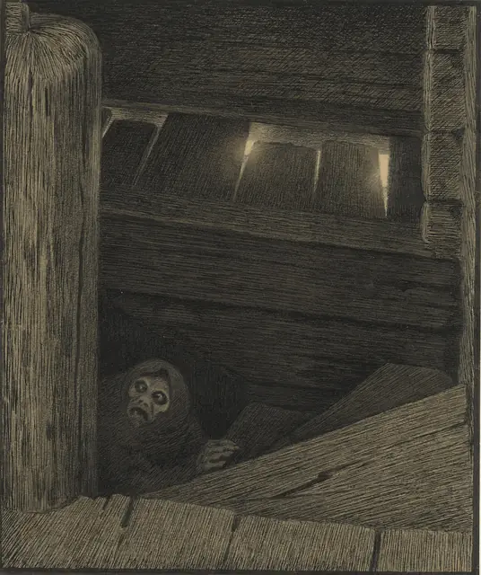
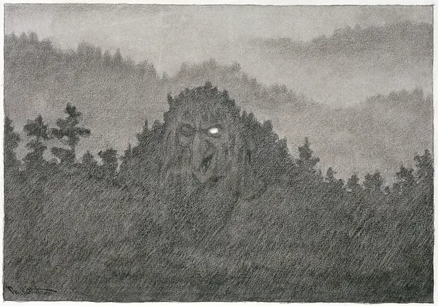
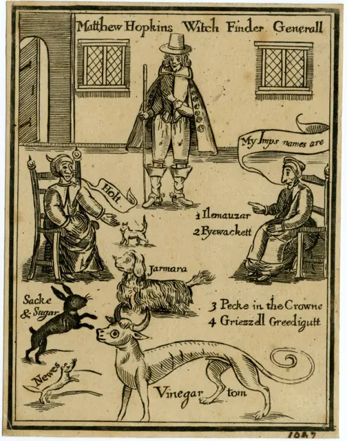
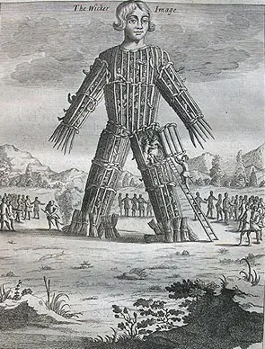
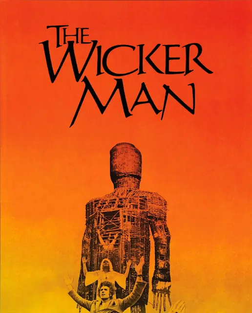
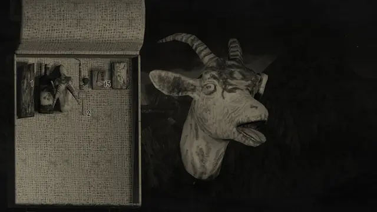
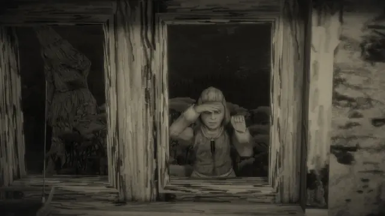
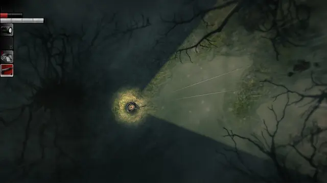
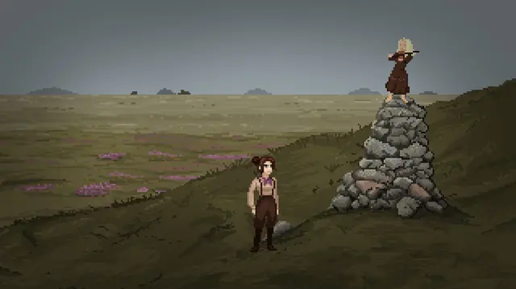
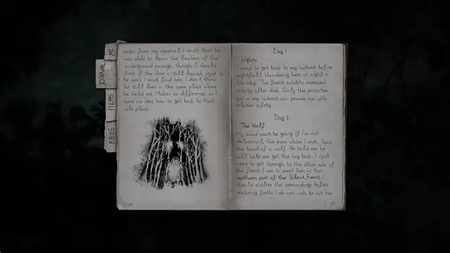

The feel
Folk horror draws its fear from folk rituals, the memory of suppressed traditions, the strange pull of landscapes and everything else modern life tried to leave behind.1 For Adam Scovell it is "the evil under the soil, the terror in the backwoods of a forgotten lane".2 Its monster is rarely a ghost or a witch. It is a community that believes in one, together.3
Michel Ziegler, who drew Mundaun in pencil, says a pencil drawing has an archaic quality, right for a place that feels very old and out of time.4 What fascinates him is "something sinister and dark behind a pastoral and idyllic surface".5 For Year Walk, Simon Flesser set out to communicate as much as possible by showing relatively little.6
- remote
- hand-drawn
- courteous
- overcast
- old as the hills
- watched from the hedge
Where it comes from
In 1970 the trade paper Kine Weekly called The Blood on Satan's Claw a "study in folk horror",3 and the term came to prominence when Mark Gatiss used it in his 2010 BBC Four documentary A History of Horror.2 Scovell calls three British films the "Unholy Trinity": Witchfinder General (1968), The Blood on Satan's Claw (1971) and The Wicker Man (1973).2 The witch-finder of the first was a real man, Matthew Hopkins,3 and a 1647 woodcut shows him between two old women and five animals named as their familiars.7 In games, Year Walk (2013) draws on Årsgång, an ancient Swedish rite for seeing the future,6 and every character, scene and texture in Mundaun (2021) is drawn in pencil.8
Core elements
Isolating rural landscape
Scovell's "folk horror chain" starts with landscape: a topography, often rural, that has adverse effects on the people living in it and cuts them off from the wider world.3 Folk horror barely works without that sketch of a particular place.9
The educated outsider
The visitor is often a figure of the establishment or academia, whose knowledge and standing fall apart in front of older ways that come from the place itself.9 In The Wicker Man it is a devout police sergeant, flown to a remote Scottish island to look for a missing girl.10
A close-knit rural community
Dawn Keetley counts the monstrous "tribe" among folk horror's most defining traits: a community joined by tradition, ritual and folklore.3 On Summerisle the islanders seem friendly, and their charming leader has staged the whole mystery to lure the policeman to his death.10
Ritual and sacrifice
Isolation skews what people believe, and the story ends in what Scovell calls the "happening/summoning", often a sacrifice.3 The customs are rarely authentic, though they are presented as if they were: folk horror often "creates its own folklore".3 In The Wicker Man a man is burnt to bring back the island's failed apple crops.9
Graphite and earth-tone palette
Mundaun is drawn entirely in graphite, which Ziegler says brings a gloomy feel and keeps the whole look consistent.5 Its black and white makes the place feel old and oppressive.4 Goya's Witches' Sabbath is mostly black, with touches of flesh tones, ochre, green and dirty grey.11
Daylight horror
Ziegler is fascinated by sinister events in broad daylight, and old black and white Swiss films that were not horror at all inspired Mundaun's daytime scenes.5 Midsommar was shot almost entirely under harsh midday sun, with its villagers dressed in white.12
How to do it
Gather reference from real places
Ziegler gathered at least 50 books of old photographs of rural life in the Alps, his biggest visual inspiration. He visited the real places three or four times a year to photograph buildings, signs, small objects, rocks and sun-scorched wood.8 Simogo took a one-day road trip in the south of Sweden for Year Walk.6
Draw the textures on paper
Sketch the object, model it, UV-unwrap it and print the UV map. Trace its outlines onto fresh paper, draw each part in pencil, then scan the sheet and put it back on the model.13 Ziegler tried pen and ink first, but pencil was softer, more versatile and more forgiving for textures on 3D models.4
Keep sketch lines and smudges
Ziegler likes drawing for its element of randomness: the sketch lines, smudges and eraser marks feel natural to the process.8 Graphite runs from abstract, dark strokes to almost photorealistic shading, so it can handle any texture source and keeps the whole world consistent.5
Block out scenes with rough sketches
Simogo, who made Year Walk, call pen and paper their most important tool.6 Pentiment's finished hand-drawn art was too slow to redo after every story change, so the team put simple, uncoloured roughs of each scene into the game while they worked out the quests and story.14
Light with natural overcast
The Witch waited for real overcast instead of faking it, because the quality of light can't be changed in post. Its dusk scenes are overcast days underexposed by one and a half to two stops, its night interiors are lit by custom three-wick candles, and its sets and costumes are desaturated.15
Pace the clues towards the ritual
Robin Hardy storyboarded The Wicker Man's customs from Frazer's The Golden Bough, from corn dollies to maypole dances.10 He planted a strong clue about every five minutes, let the hero miss some of them, and saved the reveal for the closing minutes.10
Score with acoustic folk instruments
Hardy used folk songs, many of them Robert Burns poems set to music, and found that a song like the maypole song tells you what is going on without much dialogue.10 For The Witch the rule was no electronics: Mark Korven wrote mostly for tenor and bass nyckelharpa, added waterphone and hurdy-gurdy, and saved a choir for the forest and the witch.16
Cheat sheet
Do
- Visit the real place early. Simogo's road trip came late in Year Walk, and they resolved to go before the next project started.6
- Keep the locals pleasant. Summerisle's apparently friendly islanders lead the policeman a merry dance.10
- Let the present show through the old ways, like the sugar hares under modern erasers in Summerisle's sweet shop.10
- Give the people their own language. Mundaun's villagers speak Rumantsch, which adds another layer to the sense of place.5
- Let strange things happen without explanation, as they do in the folktales Ziegler loves.13
Avoid
- Hammer's witchcraft clichés of crosses and garlic. Hardy and Shaffer built a society where the old religion informed everybody instead.10
- Hard pen lines. Ziegler tried pen and ink, and found pencil far more forgiving.4
- Near-darkness and gore, the default of most horror games. For Ziegler, horror is a thick atmosphere that permeates everything.5
- Revealing the plan too early. The Wicker Man keeps it for a reveal in the closing minutes.10
- Seeing a real culture only from outside. Folk horror films usually take the visitor's view of "strange inhabitants with their strange tribal rites".1
Tools and tutorials
- Where to begin with folk horror
Adam Scovell's beginner's path through the films and the 1960s and 70s television.
- Mundaun interview: art style, inspirations, development
Michel Ziegler's texture workflow, from printed UV map to scanned pencil drawing.
- How To Draw Realistic Textures Using Pencils
Wood, brick and metal. Exactly what you need for a texture sheet.
- Prepare Any 3D Model for Hand-Painted and Line Art Textures
Grant Abbitt on getting a model ready for drawn textures.
- Get a Hand-Drawn Sketch Look in Blender
A shader route, if you can't scan anything.
- Blender: Texture Paint
Project your own scanned drawings onto a model.
Palette
Sampled from Kittelsen, Mundaun, Goya and Year Walk. Click a smear to copy its colour.
Feel the vibe
Listen
From The Wicker Man. Robin Hardy used folk songs, many of them Robert Burns poems set to music.10
YouTubeFrom The Witch, whose score had one rule: no electronics. Listen for the nyckelharpa and the choir.16
YouTubeFrom Year Walk. Thin, cold and short, like a walk around a churchyard at midnight.
YouTubeFrom Inscryption. A woodland host who is happy to have you at his table.
YouTubeFrom First Utterance, 1971. ArtReview hears the sound of folk horror in Comus's 1970s psych-folk.1
YouTube
More references










Games
- Year Walk
Draws on the Swedish rite of Årsgång, in austere, almost papercraft visuals, with a free companion app that ties back into the game.6
- Darkwood
A top-down forest. Study how little of it your light lets you see.
- Pathologic 2
A plague town on the steppe, where the Kin treat the returning doctor as an outsider with high ideas about university medicine and make him prove himself through rites and rituals.17
- Mundaun
Every character, scene and texture is drawn in pencil,8 on paper traced from printed UV maps.13 The direct model for this page.
- The Excavation of Hob's Barrow
A pixel-art folk horror adventure in Victorian England, made to evoke M.R. James and The Wicker Man. Study its suspicious locals.18
Film, art and more
- The Wicker Man
A devout police sergeant, a remote Scottish island and a film brimful of folk songs.10 With the other two of the Unholy Trinity, Scovell's best place to start.2
- Witchfinder General
The first of the three, and the most nihilistic.2
- The Witch
Robert Eggers' New England folktale,16 under real overcast and by candlelight, with desaturated sets and costumes.15
- Midsommar
Ari Aster's village, shot almost entirely under harsh midday sun.12
- Theodor Kittelsen
Study The Black Death of the 1890s, where the plague is an old, crooked creature on the stairs.19
- Witches' Sabbath
One of Goya's Black Paintings, from a wall of the Quinta del Sordo. Look at the distorted faces in the crowd.11
Sources
- 1'It's All an Indian Burial Ground': Folk Horror Cinema's Reckoning with Colonial Violence
- 2Where to begin with folk horror
- 3Introduction: Defining Folk Horror
- 4Mundaun's creator discusses the folklore, pencil art, and more
- 5'Mundaun' Developer Michel Ziegler Discusses the Folk Horror and Real Life Experiences Behind the Game
- 6A rewarding journey: The making of Year Walk
- 7Matthew Hopkins Witch Finder Generall
- 8Mundaun invites you to a world of hand-drawn horror on PS4 tomorrow
- 9What Can Folk Horror Tell Us About Our Landscape?
- 10Long arm of the lore: Robin Hardy on The Wicker Man
- 11Witches' Sabbath (El aquelarre)
- 12The Unsettling Glow of Daylight: DP Pawel Pogorzelski on Shooting the Folk Horror of Midsommar
- 13Mundaun Interview – Art Style, Inspirations, Development, and More
- 14Deep Dive: Behind the evocative medieval manuscript art of Pentiment
- 15"We Needed the Fresh Urine of a Nanny Goat": DP Jarin Blaschke on The Witch
- 16"If You Start on 10 on Your Dissonant Scale, How Do You Go Beyond That?" Composer Mark Korven on The Witch
- 17Pathologic 2 is the greatest game you've never played, and it deserves a second chance ahead of Pathologic 3
- 18Folk horror adventure "The Excavation of Hob's Barrow" comes to Steam & GOG on Sept. 28
- 19Close Encounters: Theodor Kittelsen's "The Black Death"